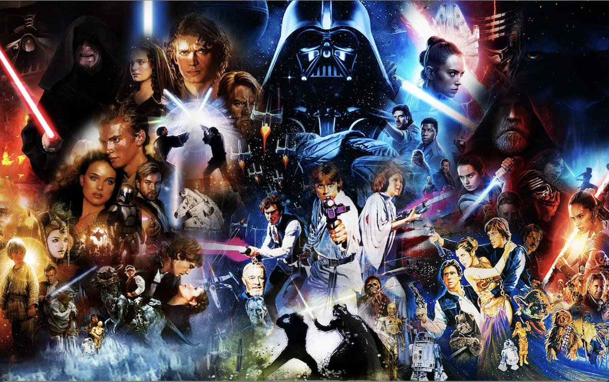

About Star Wars
Star Wars is an American epic space opera[1] multimedia franchise created by George Lucas, which began with the eponymous 1977 film[b] and quickly became a worldwide pop culture phenomenon. The franchise has been expanded into various films and other media, including television series, video games, novels, comic books, theme park attractions, and themed areas, comprising an all-encompassing fictional universe.[c] Star Wars is one of the highest-grossing media franchises of all time.
The original film (Star Wars), retroactively subtitled Episode IV: A New Hope (1977), was followed by the sequels Episode V: The Empire Strikes Back (1980) and Episode VI: Return of the Jedi (1983), forming the original Star Wars trilogy. Lucas later returned to the series to direct a prequel trilogy, consisting of Episode I: The Phantom Menace (1999), Episode II: Attack of the Clones (2002), and Episode III: Revenge of the Sith (2005). In 2012, Lucas sold his production company to Disney, relinquishing his ownership of the franchise. This led to a sequel trilogy, consisting of Episode VII: The Force Awakens (2015), Episode VIII: The Last Jedi (2017), and Episode IX: The Rise of Skywalker (2019).
A chart of my favorite Star Wars films:
| Poster | Title | Release Year | IMDB Score |
|---|---|---|---|
 |
Star Wars: Eisode V - The Empire Strikes Back | 1980 | 8.7 |
 |
Star Wars: Episode IV - A New Hope | 1977 | 8.6 |
 |
Star Wars: Episode III - Revenge of the Sith | 2005 | 7.5 |
 |
Solo: A Star Wars Story | 2018 | 6.9 |